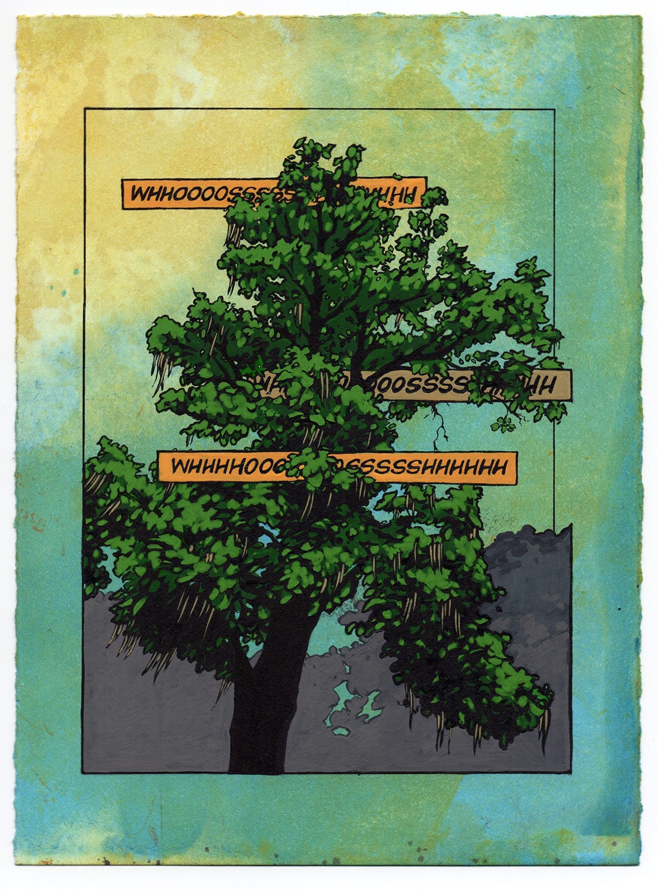
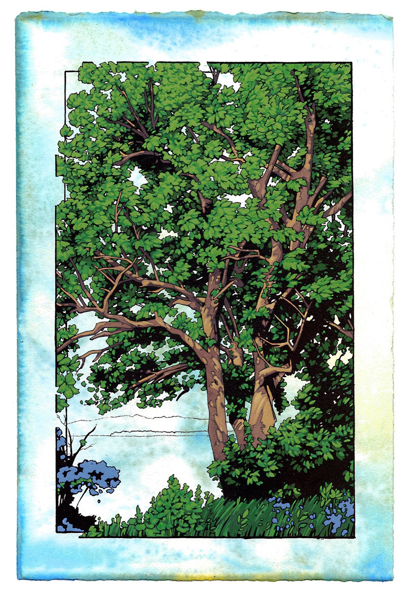
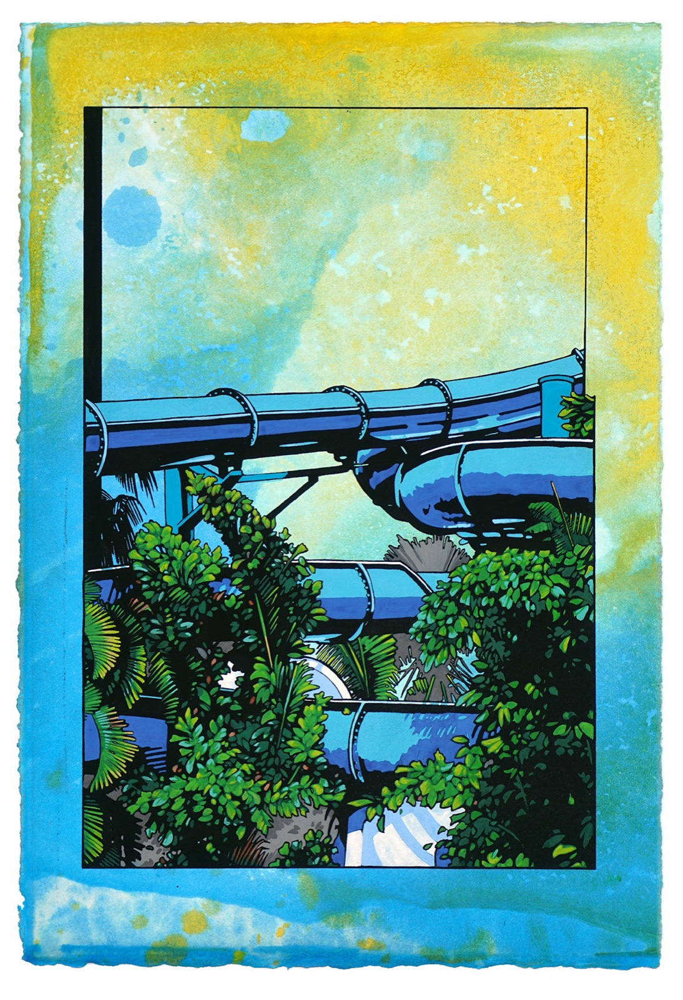
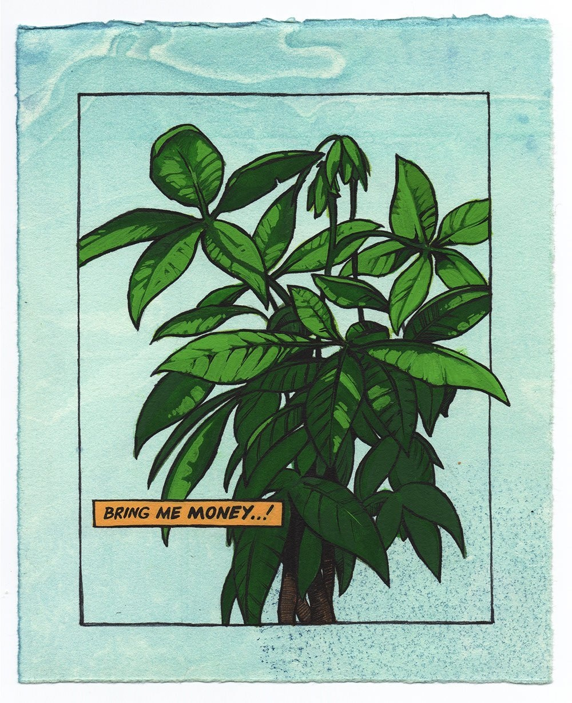
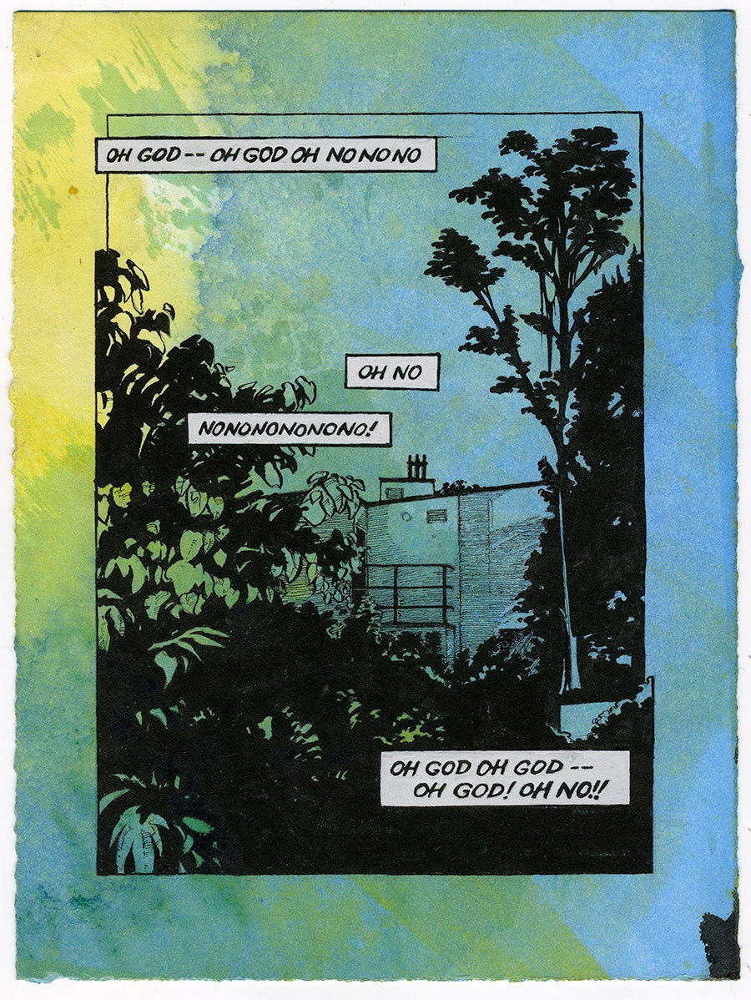
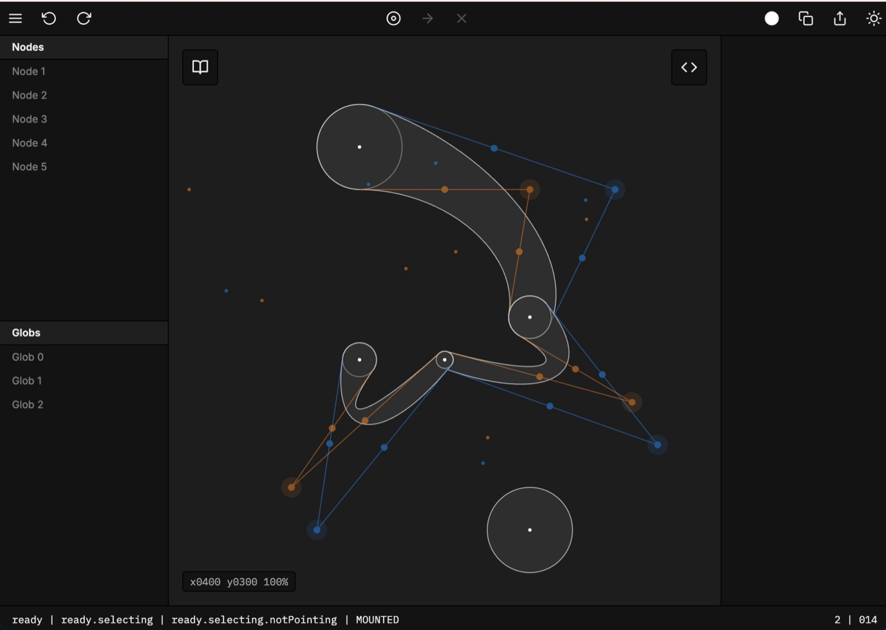
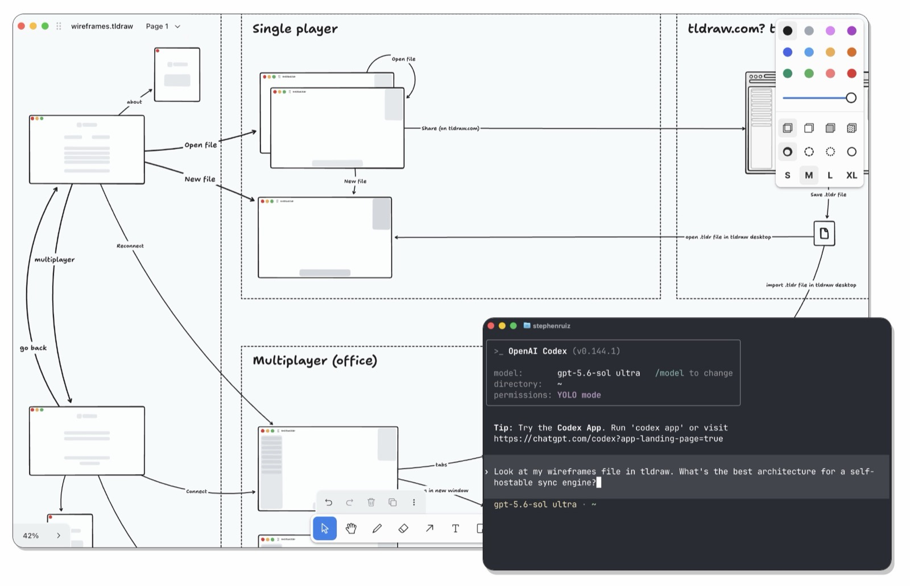

An interview with Steve Ruiz, Founder of tldraw
The painter who built the canvas
Before founding tldraw, Steve Ruiz was an artist in Chicago painting landscapes and writing for magazines. After moving to England, he decided to bring his analytical and creative sides together, teaching himself to design and code and working through roles at Framer and Play. Five years after closing his studio, he was raising money for a company of his own.
That company is tldraw, and if you have used an AI product recently, there is a good chance you have used it without knowing. tldraw is an infinite canvas, the deceptively simple whiteboard surface that lets you draw, arrange, and connect ideas in open space. Building one well is famously difficult, involving years of work on problems like selection, multiplayer sync, and the exact feel of an arrow or a stroke of ink. Today the canvas sits inside products from Replit to Autodesk to BlackRock, usually as the place where people do their more advanced, visual, and collaborative work where the chat window falls short.
We admire Steve for his charming simplicity behind tasteful engineering. The product only allows twelve colors, four sizes, and rectangles whose corners are ever so slightly, deliberately wonky, all in service of a clear idea about what a good creative tool should and should not do.
In our conversation, we trace the arc of his career, the thinking behind the brand, his bet on the canvas as a natural home for AI agents (including a detour into fairy lore), and his newest experiments letting coding agents work directly on the canvas.
Walk us through that journey of building your identity as a creative person.
My background before software, the thing I went to school for and worked in, was fine art. I loved being a studio artist, and I loved writing about other people’s artwork. That was a big part of my practice too - working as a lowercase-c art critic, spending time with other artists and hearing them talk about their work.
I was a painter. Mostly beautiful landscapes…





When I turned 30, I moved to England and opened a studio. My day job was research for attorneys as a paralegal. In my career leading up to this, I’d kept two things separate: my writing and analytical skills on one hand and my creative practice on the other, partly because you only have so much creative energy, and partly because I’d never thought about working in a commercial field in a creative role. But when you turn 30 you start to question things, so this was when I decided to unite the two. That’s how I got into design, starting in publishing.
This was 2016. I started with interactive books, then interactive products. I found a space within design that fit the way I’d worked as an artist: interactive prototyping. Everyone was talking about it then - there were meetups, blog posts from Uber and Airbnb about how they used it. So everyone was hiring for these unicorn designer developers, and barely anyone could do it. So I was like, all right, that’ll be me.
Eventually I’d put my 10,000 hours in, and I had a good feel for software that supported creativity versus software that got in its way. I worked at Framer, then at a company called Play, which went to Apple.
Those projects were all about the technical problems inside design and creative software. To work on them, you had to have strong opinions about things that are technically very hard to implement and highly subjective. What does good ink feel like? What do good arrows feel like?
A year of posting works-in-progress on Twitter led to a design tool I built named globs and an algorithm for freehand ink. Then it turned into, let’s just build a canvas. Something like Figma’s canvas, but open source and on the web. That became tldraw.

Why did you choose to put things in public, and what has it taught you?
This is something I brought from art practice. No one cares about your paintings. No one’s knocking on your door to ask about what you’re making. It’s up to you to share your work. Every serious artist has a marketing function, even if they’d never call it that. You post in-progress work, a little detail of the thing.
That’s a habit I brought into design, and then programming. Anything visual I thought was cool, I chuck it on Twitter. I still do it, and I still have to teach the people who work with me to do it. It’s a good impulse, but a foreign one if you never had that professional responsibility to promote the things you think are cool.
What is tldraw, and what is the mission?
tldraw is a company I founded to build infrastructure for creative products, specifically collaborative, whiteboard-like products. Think Figma, Miro, the products that were out in 2020, 2021 creating this incredible new category.
It’s crazy how big some of these players got without any serious competitors. Where were all the other Miros? As soon as I started working on an open-source canvas, I got constant emails from big companies saying, “We’re building the web version of our conferencing software, and we need a whiteboard, and it’s a very hard thing to build.” It’s a complex problem, especially once you add multiplayer. There was no “Mapbox for canvases.” Every team was building it themselves.
That’s what I raised money on, and it’s been the core premise ever since. Build the canvas, commercialize it by licensing it to other companies, and learn from our customers and community about where the new product opportunities are.
Having a commodity canvas we can sell creates a flywheel. The way I prove you can build cool things with it is by building cool things with it, and that doubles as our marketing. All the while, we get to do real product discovery. How does AI work with the canvas? What other forms of collaboration are possible? We get to explore the whole category in a way that would have taken five separate startups.
Can you give an example of something you were excited to ship, and walk us through the creative process behind it?
A good example is fairies. A lot of our customers are building AI products and looking to differentiate. When your user is generating a lot of different artifacts, it needs to be collaborative, and it needs to let people zoom out and see what they’ve done. Go to Replit and say, “I want to make a website for my coffee shop,” and you’re taken to a canvas built on tldraw. On Luma AI, if you’re generating thousands of images, you need a place for them to live, and that’s the canvas. Even companies that don’t sound like creative tools, like Honeycomb or BlackRock, use it. To get people doing advanced and collaborative things with AI, you need more than a chatbot.
We’ve been working for years on what a harness for AI agents looks like, one that lets them work with the canvas and eventually on the canvas. Last December we shipped fairies, a version of that harness that’s spatially located. The agent is represented by an avatar, in this case a fairy. You can have several of them, customize them with different hats, even adjust the length of their legs. The affordances that make the canvas good for human collaboration turn out to be really useful for agents too. I can ask one to draw a cat and another to mock up a landing page for a cat shelter, and you can watch them work.
How did you land on fairies as the character of choice?
They’re not human, not really virtual collaborators. It would be ineffective to have them pretend to be a colleague. If we called this agent “Susan” instead of fairy “Marion Fluttersmith,” it would be a bad design. But when you characterize them as non-human intelligences, they’re fairies.
We got really into fairy lore on this project. I pulled some papers, read a bit of the literature, and the inspiration worked in both directions. In one direction, I’d look in the lore for parallels to the agentic world. I was looking for a metaphor for MCP servers. Maybe it’s a gazing pool they look into, or a cell phone they’re on.
In the other direction, the lore inspired the product. Fairies love leaving gifts. Think of the tooth fairy, where you leave a gift and they replace it with another. So what’s the metaphor for gift-giving in AI assistance? Maybe a fairy leaves a little note or a piece of context for later. An agent might say, “I can’t do this right now, but it’s a good idea, let me leave it here for another fairy to come by and pick up as a task.”
Any specific book or story that really landed, or were you just going through a lot of fairy lore?
I was going through a lot. It turns out English fairies are super friendly - Tinkerbell, the tooth fairy. But Irish fairies are terrifying - not your friends, will steal your breath away. So I learned that Irish fairies are scary and you shouldn’t collaborate with Irish fairies.
Do you think fairies are real?
I’ll say this much. If you’re thinking about how humans interact with non-human intelligences and you’re looking for a metaphor, or honestly just inspiration, it turns out we have a lot of literature and things in our culture about exactly that. Haunted houses, bodies of water with a lady in the lake. We have a way of thinking about this stuff. If you’re deep into the user experience of AI, you should be learning about fairy lore.
There’s something delightfully raw and sweet about the tldraw branding. How did you land on this feeling?
I think it comes down to what makes a good creative tool. tldraw has a pretty technical audience, used by a lot of technical teams for interviews, wireframing, diagrams. If you give technical people a color picker, they’ll obsess over picking the right color. Too many options, and you’ve created the possibility of making the wrong choice. You want to reduce the options so people focus on what matters.
If you zoom in, our rectangles are all slightly wonky. We add a little random offset to the corners of every shape, and it’s random every time. It’s a subtle hint. You have precise tools, but limited choices, and not really the option for perfection. This isn’t one of those tools. You can relax a little.
So psychologically, people don’t even realize it, but these choices make it feel experimental, i.e., don’t try to make it perfect?
Exactly. We only have 12 colors and 4 sizes. I’ve watched many people ask, where’s my 13th color? I want a different green. And I say, you probably don’t need it. And they go, “Oh… I guess I don’t, I’ll work with what I have.” There are no shadows in tldraw, but you can make shadows out of primitives. There are no sliders, but you can build one out of the shapes you have.
It’s a bit of a psychological move, but it’s also just a good creative tool. A good creative tool doesn’t fight you, but it doesn’t give you everything you want either. You have to be creative with the tool itself to get the most out of it.

What’s something you’ve built that you’re most proud of?
We launched tldraw offline. It’s a desktop app built on the canvas, but it’s also file-based. I can do File, Save As. I can turn off my Wi-Fi and it works normally. The really different thing is that we set it up so AI agents can program against the canvas.
tldraw is designed to be an SDK, but there was never an easy way to just experiment with that. Not everyone wants to set up a website and play with a JavaScript API. So this app is a fun way to fire up your terminal, run Codex or Claude, and say, “in dataviz.tldraw, make it dark mode.” It can write into the document, read it, and update it. The community has gone wild with it, because it’s like a local MCP server. Agents can just reach into it.

Rapid fire
I have a seven-year-old daughter, and a lot of the ideas come from her. Playing with tldraw together and realizing there’s a thing she wants to do, so how do we make that easier? That’s my number one source of product inspiration.
I’m also really inspired by software from the second half of the 90s. Not out of nostalgia, but because that software had more of a thumbprint, more of an index of the people who made it. It was weirder, more idiosyncratic, and fun.
I really like the Pierre Computer Company. An incredibly talented technical team, but with a sense of humor, building their brand by being loud about the cool things they do and not afraid to be a little confusing about what products they make.
Depends on who you are. If you’re a regular computer user, check out tldraw.com. If you’re a developer or a product person, check out tldraw.dev, to learn about the SDK. And if you have a coding agent like Claude or Codex on your computer, check out offline.tldraw.com. There’s more on Twitter at x.com/tldraw. And yes, we’re hiring in London, software and product engineers, and design engineers too.